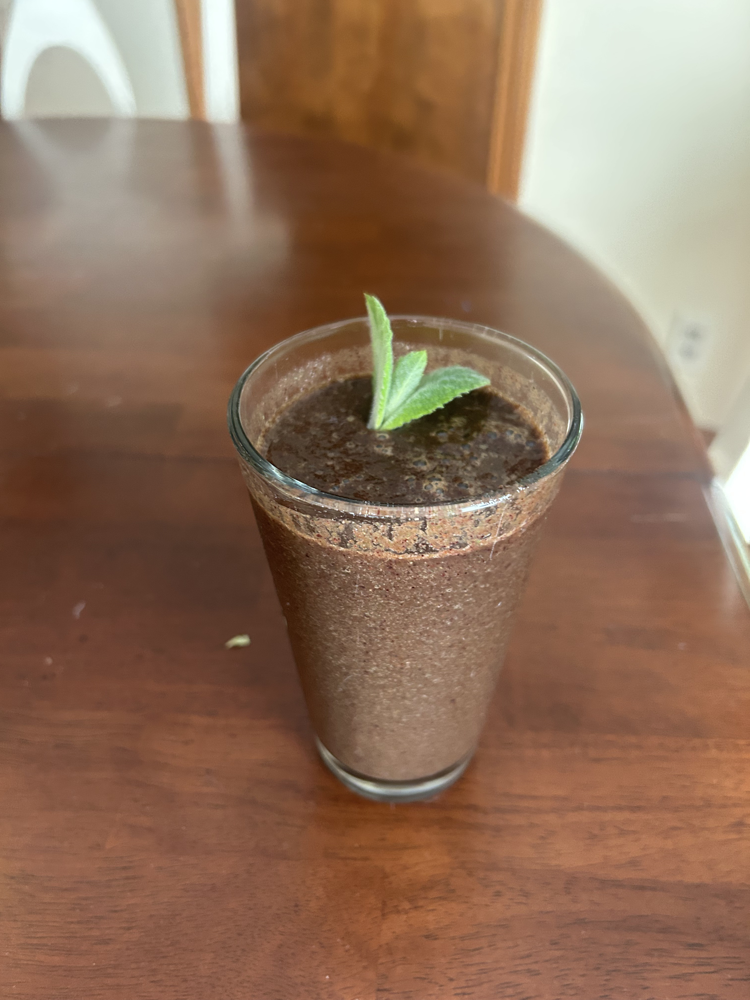

Home
Antioxidant Explosion

Description
The antioxidant explosion smoothie is a delicious smoothie featuring lots of micronutrients! It is sweet, but still very healthy.
It can be enjoyed at any time of the day, but I think it is best after a hard run.
Ingredients
- Around 3 cups of water
- 1/2 cup frozen blueberries
- A small chunk of fresh ginger root
- About 5 large kale leaves
- 1 Lemon
- A small mint leaf (optional)
Steps
- Put the water in your blender
- Place the rest of the ingredients in the blender and blend until smooth, about 1:30.
- Serve with an optional mint leaf on top